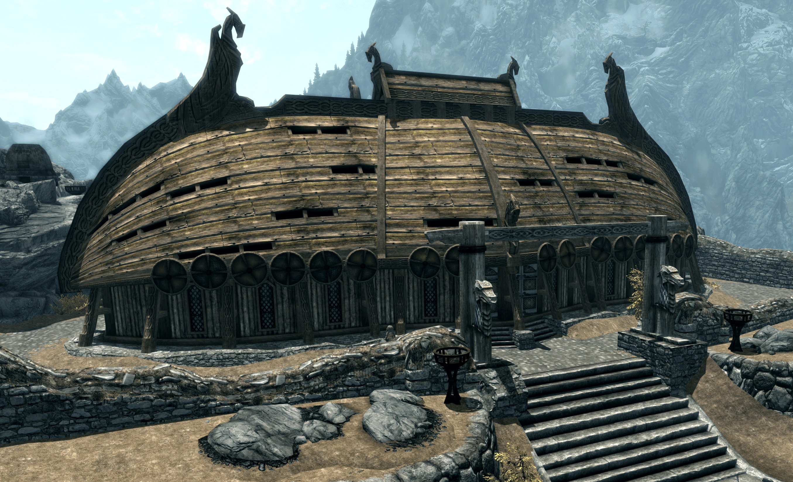
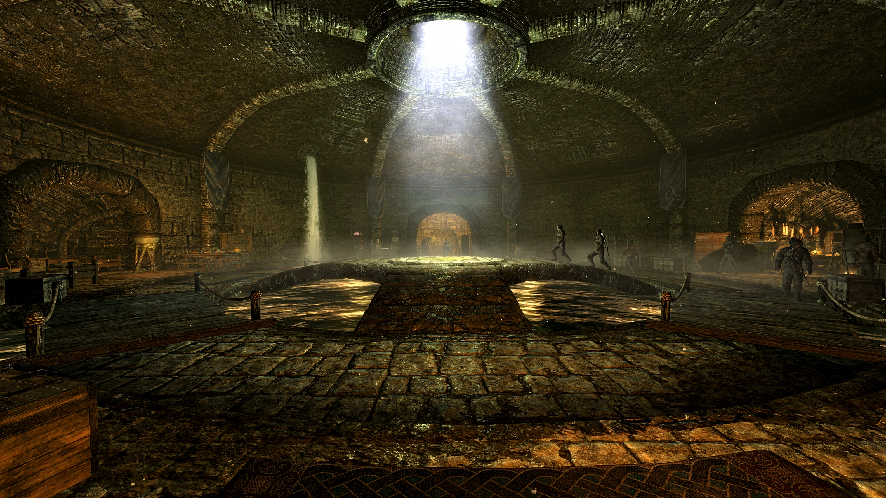
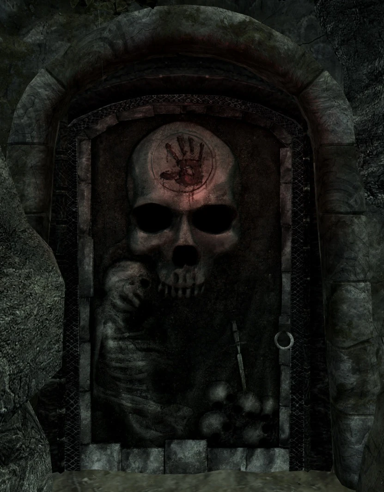
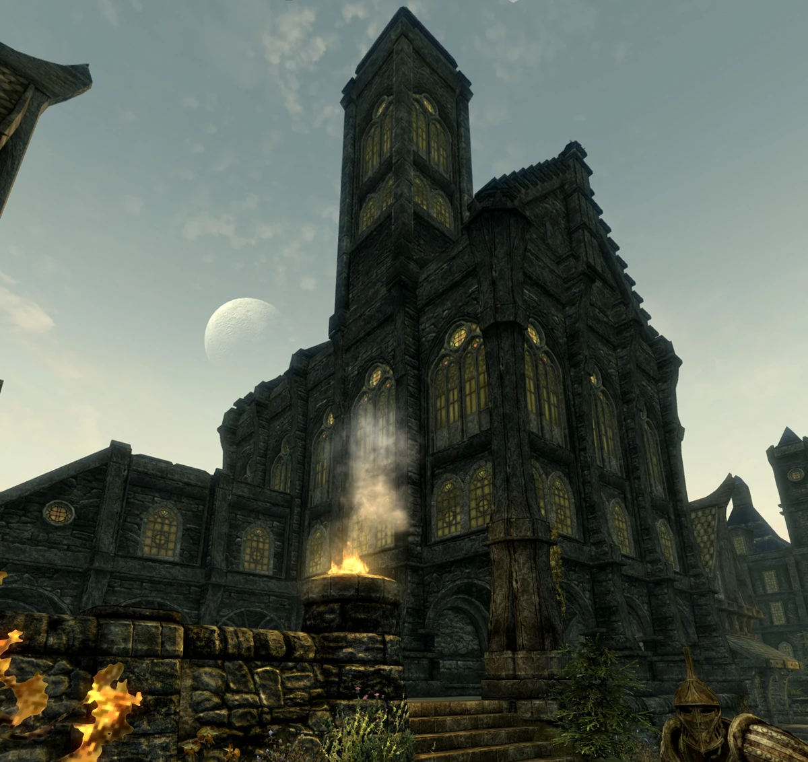
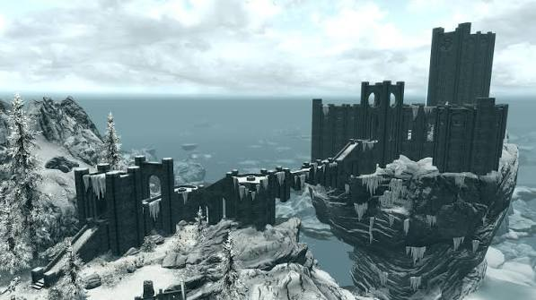

Facções de Skyrim
Em Skyrim, existem várias facções que os jogadores podem se juntar ou interagir. Cada facção tem sua própria história, objetivos e missões. Algumas das principais facções incluem:
- Companions: Uma guilda de guerreiros que oferece treinamento e missões de combate.
- Thieves Guild: Uma organização criminosa especializada em furtos e atividades ilícitas.
- Dark Brotherhood: Uma guilda de assassinos que oferece contratos para eliminar alvos específicos.
- Bards College: Uma instituição dedicada à música e à arte, oferecendo missões relacionadas à cultura e entretenimento.
- College of Winterhold: Uma escola de magia que oferece treinamento em feitiçaria e missões mágicas.
Cada facção oferece uma experiência única no jogo, permitindo aos jogadores explorar diferentes aspectos do mundo de Skyrim e moldar sua própria história dentro do jogo.
Companions: Uma guilda de guerreiros que oferece treinamento e missões de combate.

Thieves Guild: Uma organização criminosa especializada em furtos e atividades ilícitas.

Dark Brotherhood: Uma guilda de assassinos que oferece contratos para eliminar alvos específicos.

Bards College: Uma instituição dedicada à música e à arte, oferecendo missões relacionadas à cultura e entretenimento.

College of Winterhold: Uma escola de magia que oferece treinamento em feitiçaria e missões mágicas.
